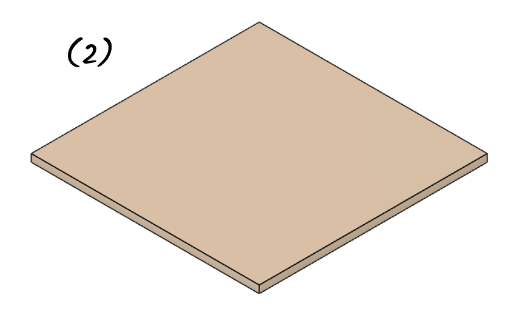
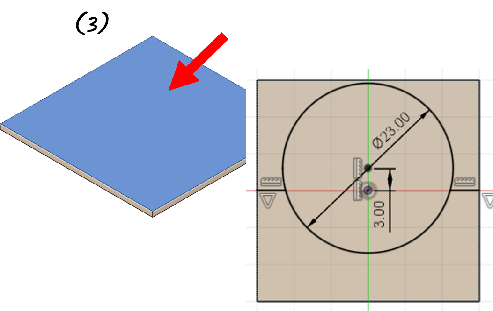

Design para Impressão 3D / 064 – Comutador
0%
Modelar, exportar e imprimir um comutador de múltiplas peças usando o Fusion 360 e o PrusaSlicer.

Create > ExtrudeModify > Appearance
Create > ExtrudeCreate > Extrude com Operation = New Body
Create > Mirror em torno do RIGHT PLANEModify > Combine com Operation = JoinModify > Combine com Operation = Cut
Modify > Offset FaceCreate > Extrude com Extend Type = To Object
Create > Extrude com Operation = New BodyCreate > Mirror em torno do RIGHT PLANE
Modify > Combine com Operation = JoinCreate > Extrude com Extend Type = To ObjectModify > Offset Face
Modify > ChamferCreate > Extrude com Extend Type = To Object
Create > Extrude com Operation = New BodyModify > AppearanceModify > Offset Face
Create > Extrude com Extend Type = To Object
Create > Extrude com Extend Type = To Object e Operation = New BodyModify > FilletModify > Offset FaceModify > Fillet
Modify > Offset FaceModify > ChamferModify > FilletModify > Fillet
Modify > Move/CopyModify > AppearanceModify > Move/CopyModify > Offset Face
Modify > Chamfer